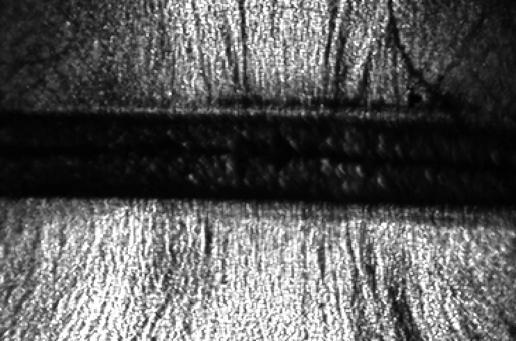

Shock-wave transmission
Capturing how underwater shocks transmit through PLA, aluminium and copper.
AEROSPACE ENGINEERING PORTFOLIO
I’m Brian, an MSc Aerospace Engineering graduate from KTH. I work across experimental research, propulsion and simulation.
KTH Royal Institute of Technology · University of Pisa

THE WORK
Research, design and hands-on engineering.
Explore the question, the method and the result.
Capturing how underwater shocks transmit through PLA, aluminium and copper.
Using transient multiphase CFD to compare passive baffles for a water-rocket tank.
Characterising spacecraft surface coatings inside KTH’s Space Sauna vacuum chamber.
Investigating low-Prandtl-number heat transfer in two components of the TALL facility.
Sizing radiators and tuning heater duty cycles across hot, cold and survival cases.
From sizing constraints to aerodynamic performance and longitudinal stability.
Comparing propellants, thrusters and power-system mass for a lunar transfer.
Integrating power, heat rejection and deployable hardware into a crewed Mars concept.
Exploring deep-space power generation, reliability and radiation protection.
An early feasibility study of foam-assisted deorbiting in low Earth orbit.
Hands-on propulsion work, sensor calibration and static-fire testing for Mjolnir.
Thermal modelling and subsystem requirements within a student satellite team.
No projects match this search. Try another topic or select All projects.
ABOUT ME
I’m an aerospace engineer with a particular interest in propulsion, compressible flows and the behaviour of systems under demanding conditions.
At KTH, I combined experimental shock-wave research with student rocketry, satellite thermal analysis and multidisciplinary design projects. My bachelor’s degree at the University of Pisa introduced me to aerospace systems and radioisotope power for space missions.
I enjoy moving between a physical problem, a model and the data needed to evaluate it. I’m looking to bring that approach to aerospace and R&D teams.
TOOLS & METHODS
SimulationANSYS Fluent · CFX · SYSTEMA · THERMICA · MATLAB
DesignSolidWorks · CATIA V5 · Fusion 360 · DOORS
ExperimentalHigh-speed shadowgraphy · Sensor integration · Data acquisition · Thermal-vacuum testing
LET’S TALK
For aerospace, propulsion, experimental and R&D opportunities.
brian2000ber@gmail.com